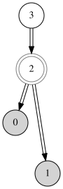
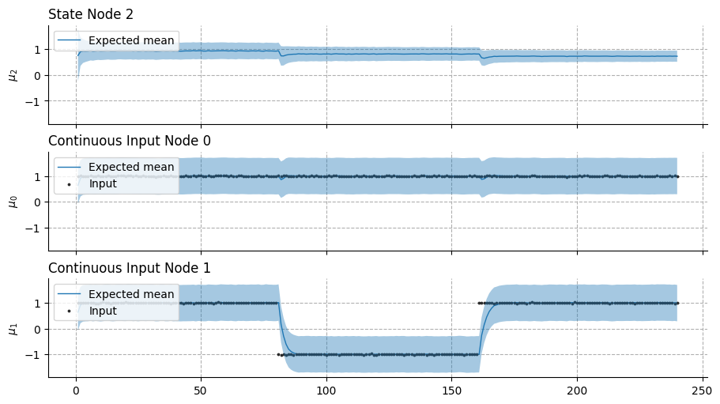
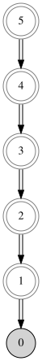
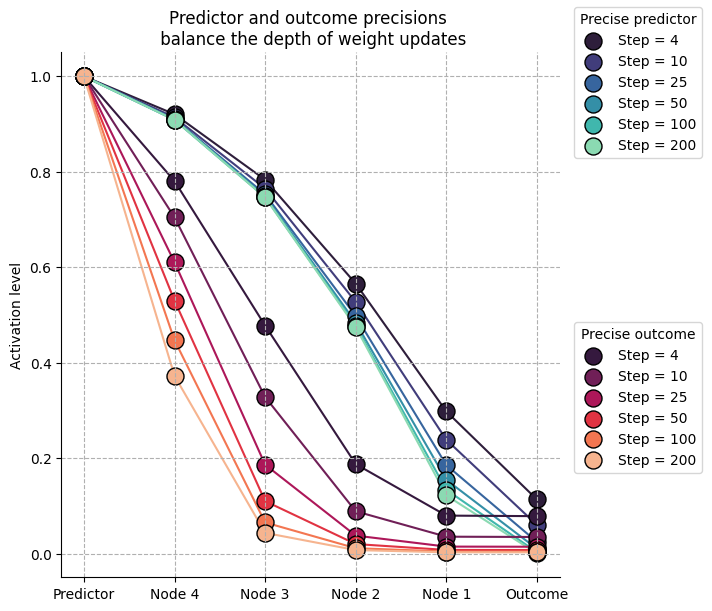
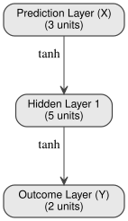
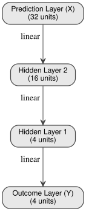
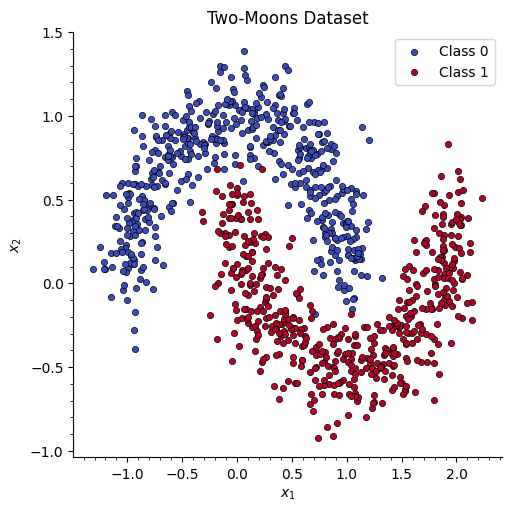
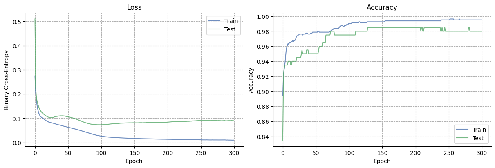

Deep Bayesian predictive coding#

import jax.numpy as jnp
import matplotlib.animation as animation
import matplotlib.pyplot as plt
import numpy as np
import seaborn as sns
import treescope
from IPython.display import HTML
from pyhgf.model import DeepNetwork, Network
from pyhgf.plots.graphviz.plot_network import plot_deep_network
np.random.seed(123)
plt.rcParams["figure.constrained_layout.use"] = True
treescope.basic_interactive_setup(autovisualize_arrays=True)
Warning
The features exposed here are still a work in progress.
The hierarchical Gaussian filter is built on top of a generative model that is governed by Gaussian random walks, which is best used to model the time-resolved evolution of beliefs in volatile environments. But the framework can easily extend to traditional applications of predictive coding, such as deep neural networks, where the variational message passing replaces the use of iterative gradient descent during inference.
In this notebook, we show that the prospective configuration in predictive coding networks can be performed by one-shot variational updates, removing the need for gradient descent over the energy function, while learning expected precision in the hidden layers, which is often fixed in other approaches. We illustrate this with the “bear example” from [Song et al., 2024] and on a classification task with deep networks.

Fig. 4 Learning with prospective configuration.#
Learning in deep networks#
Prospective configuration#
In standard backpropagation, weights are updated using gradients computed from a fixed forward pass. The network’s activations are “frozen” while the error signal propagates backward. Prospective configuration [Song et al., 2024] takes a different approach: before any weight change, the network first infers the most likely activations at every layer by settling prediction errors across the whole hierarchy. Only once this inference step has converged are the weights updated. This two-phase process (infer activations, then update weights) prevents the catastrophic interference that arises when a local weight change inadvertently distorts representations elsewhere in the network.
In pyhgf, this is implemented naturally through the belief propagation cycle. At each observation:
Prediction: predictors (\(x\)) are provided in the leaf nodes. Each node generates a top-down prediction for its children via a nonlinear coupling function \(g(\cdot)\).
Observation & prediction errors: the observed values (\(y\)) are compared with predictions, and precision-weighted prediction errors propagate upward through the hierarchy.
Posterior update: node activations (means and precisions) are updated to minimise free energy, settling the network into a new equilibrium. This is comparable to the prospective configuration step.
Weight update: only after the activations have settled are the coupling strengths (weights) adjusted using the prediction errors and the inferred activations.
We illustrate this using the “bear” example network from Song et al. [2024].
# here x represents the visual input (River / No River)
x = np.array([1.0, 1.0] * 120)
x += np.random.normal(size=x.shape) / 100
# y represents the auditory and olfactory stimuli
y = np.array([
x,
np.concat([
np.array([1.0, 1.0] * 40),
np.array([-1.0, -1.0] * 40),
np.array([1.0, 1.0] * 40),
])
+ np.random.normal(size=x.shape) / 100,
]).T
# We start by defining a simple network with two branches
network = (
Network(update_type="unbounded")
.add_nodes(n_nodes=2, precision=2.0, expected_precision=2.0)
.add_nodes(
kind="volatile-state",
value_children=[0, 1],
autoconnection_strength=0,
tonic_volatility=-4.0,
coupling_fn=(jnp.tanh, jnp.tanh),
)
.add_nodes(
value_children=2,
autoconnection_strength=0,
coupling_fn=(jnp.tanh,),
precision=2.0,
expected_precision=2.0,
)
)
network.plot_network()

Deep networks trained for classification purposes differ from other predictive coding networks as both roots and leaves should receive inputs (predictors and outcomes, respectively).
network.fit(
x=x,
y=y,
inputs_x_idxs=(3,),
inputs_y_idxs=(0, 1),
learning_kind="dynamic",
lr=1.0,
record_trajectories=True,
);

This example illustrates the effectiveness of the variational update to replace the prospective configuration step based on gradient descent. As new observations contradict the expected outcomes (i.e., observing the river without hearing the water, from trials 40 to 80 in the bottom panel), the network efficiently reorganizes without interfering with other predictions (i.e,. still expecting smelling the salmon while seeing the water, top panel, trials 40 to 80).
Hint
Volatile state nodes
In a predictive coding network, two types of state nodes can be used to build the hierarchy. Continuous-state nodes are the standard HGF nodes: their precision is controlled by external volatility parents connected through dedicated volatility edges, and their mean persists across time steps by default (autoconnection_strength=1.0). This makes them well-suited for tracking slowly drifting quantities or serving as input/output layers that receive observations. Volatile-state nodes bundle a value level and an internal volatility level into a single node, removing the need for separate volatility parents. Their mean resets at each time step by default (autoconnection_strength=0.0), making them behave like stateless hidden units whose activation is determined entirely by incoming predictions. In practice, volatile-state nodes are the natural building block for hidden layers in deep predictive coding networks; they are more parameter-efficient than continuous-state nodes because the volatility coupling is handled internally, and their stateless default mirrors the feedforward activations of a conventional neural network.
Weight update#
Once the network has settled into its new posterior (the prospective configuration step), the coupling strengths \(w_i\) between a child node and its value parents are updated. Let \(\text{PE}\) denote the value prediction error at the child node, \(\pi_{\text{child}}\) its posterior precision, and \(g(\mu_i)\) the activation of parent \(i\) passed through the coupling function \(g\).
Fixed learning rate. With a constant step size \(\eta\):
Dynamic (precision-weighted) learning rate. When no fixed rate is specified, the update uses a Kalman-gain-like rule that automatically scales the step size by the relative precision of parent and child:
In the dynamic case, precise parents exert a larger influence on the weight update while uncertain parents are updated more cautiously. This precision weighting is what produces the depth-dependent learning effect demonstrated in the next section.
Input precision controls the depth of weight updates#
One natural consequence that emerges from this framework is that neural activations are defined by their precision, and as a result, the precision of the inputs (both predictors and outcomes) controls the strengths of prediction errors and the amplitude of weight updates in the vicinity of information flows. For example, more precise outcomes will guide weight updates to be larger at the nodes close to the inputs, and a more precise predictor will guide weight updates to be larger close to the internal representation.
We can simulate this with a deep stack of hidden nodes whose predictions and outcomes differ, which forces the network to reorganize. Here, we show that the balance of precision between predictors and outcomes shapes the depth of weight updates.
linear = lambda x: x
x = np.array([1.0] * 200)
# x += np.random.normal(size=x.shape) / 100
y = np.array([0.0] * 200)
# y += np.random.normal(size=y.shape) / 100
# We start by defining two networks with varying precision
# at the predictor and outcome levels
high_outcome_precision_network = (
Network(update_type="unbounded")
.add_nodes(n_nodes=1, precision=1e2, expected_precision=1e2)
.add_nodes(
kind="volatile-state",
value_children=0,
coupling_fn=(linear,),
tonic_volatility=-2.0,
autoconnection_strength=0,
)
.add_nodes(
kind="volatile-state",
value_children=1,
coupling_fn=(linear,),
tonic_volatility=-2.0,
autoconnection_strength=0,
)
.add_nodes(
kind="volatile-state",
value_children=2,
coupling_fn=(linear,),
tonic_volatility=-2.0,
autoconnection_strength=0,
)
.add_nodes(
kind="volatile-state",
value_children=3,
coupling_fn=(linear,),
tonic_volatility=-2.0,
autoconnection_strength=0,
)
.add_nodes(
kind="volatile-state",
value_children=4,
coupling_fn=(linear,),
tonic_volatility=-2.0,
autoconnection_strength=0,
precision=1.0,
expected_precision=1.0,
)
)
high_predictor_precision_network = (
Network(update_type="unbounded")
.add_nodes(n_nodes=1, precision=1.0, expected_precision=1.0)
.add_nodes(
kind="volatile-state",
value_children=0,
coupling_fn=(linear,),
tonic_volatility=-2.0,
autoconnection_strength=0,
)
.add_nodes(
kind="volatile-state",
value_children=1,
coupling_fn=(linear,),
tonic_volatility=-2.0,
autoconnection_strength=0,
)
.add_nodes(
kind="volatile-state",
value_children=2,
coupling_fn=(linear,),
tonic_volatility=-2.0,
autoconnection_strength=0,
)
.add_nodes(
kind="volatile-state",
value_children=3,
coupling_fn=(linear,),
tonic_volatility=-2.0,
autoconnection_strength=0,
)
.add_nodes(
kind="volatile-state",
value_children=4,
coupling_fn=(linear,),
tonic_volatility=-2.0,
autoconnection_strength=0,
precision=1e2,
expected_precision=1e2,
)
)
high_predictor_precision_network.fit(
x=x,
y=y,
inputs_x_idxs=(5,),
inputs_y_idxs=(0,),
learning_kind="dynamic",
lr=1.0,
record_trajectories=True,
)
high_outcome_precision_network.fit(
x=x,
y=y,
inputs_x_idxs=(5,),
inputs_y_idxs=(0,),
learning_kind="dynamic",
lr=1.0,
record_trajectories=True,
);
high_outcome_precision_network.plot_network()


Building Deep-Network Structures in pyhgf#
Backends#
As of version 0.2.9, PyHGF supports the creation of deep neural networks for classification tasks using:
pyhgf.model.Network: using the standard network class. Deep networks have to be built manually usingpyhgf.model.Network.add_nodes. This approach is more flexible, but will rapidly struggle with large structures (> 20 nodes) as each update function is cached by JAX.pyhgf.rshgf.Network: is the Rust equivalent and will scale efficiently to larger structures, while remaining flexible in the network configuration. It supports layered designs withpyhgf.rshgf.Network.add_layer(). It is not differentiable.pyhgf.model.DeepNetwork: is a vectorised JAX implementation, differentiable, and the fastest solution.
Here, we demonstrate two new high-level functions for constructing layered, fully connected value-parent structures in pyhgf:
add_layer()– adds a single fully connected parent layer.add_layer_stack()– builds multiple layers at once, similar toSequentialin deep-learning frameworks.
These functions allow HGF models to be composed in a deep-network style while remaining fully compatible with the probabilistic belief-update dynamics.
Adding fully connected Layers with add_layer#
add_layer provides fine-grained control, letting you manually construct each layer.
This is useful when each layer should have different hyperparameters (precision, tonic volatility, autoconnection strength, etc.). The function creates a fully connected parent layer, in which each parent node connects to all children below it.
By default, add_layer automatically connects to all orphan nodes (nodes without value parents). You can also specify value_children explicitly to control which nodes the layer connects to.
# Or chain them in a single expression (like Keras/PyTorch):
net = (
DeepNetwork(coupling_fn=jnp.tanh)
.add_layer(size=2)
.add_layer(size=5, tonic_volatility=-1.0)
.add_layer(size=3, tonic_volatility=-2.0)
)
# Visualize the network structure
plot_deep_network(net)

Adding multiple layers with add_layer_stack#
add_layer_stack provides a compact way to build several fully connected parent layers at once. Instead of adding each layer manually, you simply specify the desired layer sizes (e.g., [3, 16, 32]), and the function creates them sequentially. Each layer is fully connected to the one below, using the same hyperparameters for all layers you add (precision, tonic volatility, autoconnection strength, etc.).
This is ideal when you want to quickly prototype deep hierarchical networks or mimic the “stacked layer” construction found in deep learning frameworks.
Like add_layer, it also supports method chaining and auto-connects to orphan nodes by default.
# Add 3 fully connected parent layers (4→4→16→32) using method chaining
net = (
DeepNetwork()
.add_layer(size=4)
.add_layer_stack(
layer_sizes=[4, 16, 32],
tonic_volatility=-1.0,
)
)
plot_deep_network(net)

Deep networks often require weights to be initialised using strategies that conserve the balance of variance in the inputs and output nodes. The classes have a pyhgf.DeepNetwork.weight_initialisation() method that supports the most popular strategies.
net.weight_initialisation(strategy="xavier");
Binary classification on a two-moons dataset#
We now demonstrate DeepNetwork on a non-linearly separable problem: the classic two moons dataset. We train a 2 → 16 → 16 → 16 → 16 → 16 → 16 → 16 → 16 → 1 (binary) predictive coding network with tanh coupling functions and a binary output layer, using the Adam optimiser. After training, we visualise how the learned decision boundary evolves across epochs.
Generate the dataset#
We create a synthetic two-moons dataset with 500 samples and split it into 80% training / 20% test. We also pre-compute the mesh grid that will be used for the decision boundary heatmap.
# --- Two-moons dataset ---
def make_moons(n_samples=500, noise=0.15, seed=42):
"""Generate a two-moons dataset."""
rng = np.random.default_rng(seed)
n_half = n_samples // 2
theta_upper = np.linspace(0, np.pi, n_half)
x_upper = np.column_stack([np.cos(theta_upper), np.sin(theta_upper)])
theta_lower = np.linspace(0, np.pi, n_samples - n_half)
x_lower = np.column_stack([1 - np.cos(theta_lower), 1 - np.sin(theta_lower) - 0.5])
X = np.vstack([x_upper, x_lower]) + rng.normal(scale=noise, size=(n_samples, 2))
y = np.hstack([np.zeros(n_half), np.ones(n_samples - n_half)])
idx = rng.permutation(n_samples)
return X[idx].astype(np.float32), y[idx].astype(np.int32)
N_SAMPLES = 1000
X_moons, y_moons = make_moons(n_samples=N_SAMPLES, noise=0.15, seed=42)
# Train / test split (80 / 20)
n_train = int(0.8 * N_SAMPLES)
X_train_m, X_test_m = X_moons[:n_train], X_moons[n_train:]
y_train_m, y_test_m = y_moons[:n_train], y_moons[n_train:]
# Mesh grid for decision boundary
h = 0.02
x_min, x_max = X_moons[:, 0].min() - 0.5, X_moons[:, 0].max() + 0.5
y_min, y_max = X_moons[:, 1].min() - 0.5, X_moons[:, 1].max() + 0.5
xx, yy = np.meshgrid(np.arange(x_min, x_max, h), np.arange(y_min, y_max, h))
grid = jnp.array(np.column_stack([xx.ravel(), yy.ravel()]), dtype=jnp.float32)
print(f"Training: {X_train_m.shape[0]} samples | Test: {X_test_m.shape[0]} samples")
print(f"Grid points: {grid.shape[0]:,}")
Training: 800 samples | Test: 200 samples
Grid points: 37,848
# Quick scatter of the raw data
fig, ax = plt.subplots(figsize=(5, 5))
for cls, color in [(0, "#3b4cc0"), (1, "#b40426")]:
mask = y_moons == cls
ax.scatter(
X_moons[mask, 0],
X_moons[mask, 1],
marker="o",
s=20,
edgecolors="k",
linewidths=0.5,
c=color,
label=f"Class {cls}",
)
ax.set(xlabel="$x_1$", ylabel="$x_2$", title="Two-Moons Dataset")
ax.legend()
plt.minorticks_on()
sns.despine()

Build the network#
We construct a 2 → 16 → 16 → 16 → 16 → 16 → 16 → 16 → 16 → 1 (binary) DeepNetwork with tanh coupling functions and He weight initialisation. The binary output layer applies a sigmoid internally, producing probabilities directly.
# Build: 2 → 16 → 16 → 1 (binary output)
clf_net = (
DeepNetwork(coupling_fn=jnp.tanh)
.add_layer(size=1, kind="binary")
.add_layer(size=16, tonic_volatility=-4.0, tonic_volatility_vol=-2.0)
.add_layer(size=16, tonic_volatility=-4.0, tonic_volatility_vol=-2.0)
.add_layer(size=16, tonic_volatility=-4.0, tonic_volatility_vol=-2.0)
.add_layer(size=16, tonic_volatility=-4.0, tonic_volatility_vol=-2.0)
.add_layer(size=16, tonic_volatility=-4.0, tonic_volatility_vol=-2.0)
.add_layer(size=16, tonic_volatility=-4.0, tonic_volatility_vol=-2.0)
.add_layer(size=16, tonic_volatility=-4.0, tonic_volatility_vol=-2.0)
.add_layer(size=16, tonic_volatility=-4.0, tonic_volatility_vol=-2.0)
.add_layer(size=16, tonic_volatility=-4.0, tonic_volatility_vol=-2.0)
.add_layer(size=16, tonic_volatility=-4.0, tonic_volatility_vol=-2.0)
.add_layer(size=16, tonic_volatility=-4.0, tonic_volatility_vol=-2.0)
.add_layer(size=16, tonic_volatility=-4.0, tonic_volatility_vol=-2.0)
.add_layer(size=2, add_constant_input=False, coupling_fn=lambda x: x)
.weight_initialisation("he", seed=0)
)
print(f"Architecture: 2 → 16 → 16 → 1 (binary)")
print(f"Layers: {clf_net.n_layers} | Nodes: {clf_net.n_nodes}")
Architecture: 2 → 16 → 16 → 1 (binary)
Layers: 14 | Nodes: 195
Train over multiple epochs#
We train for 100 epochs using the Adam optimiser and snapshot the decision boundary at regular intervals.
NUM_EPOCHS = 300
SNAPSHOT_EVERY = 2
LR = 0.2
# Prepare JAX arrays
jax_X_train = jnp.array(X_train_m)
jax_y_train = jnp.array(y_train_m, dtype=jnp.float32).reshape(-1, 1)
jax_X_test = jnp.array(X_test_m)
jax_y_test = jnp.array(y_test_m, dtype=jnp.float32).reshape(-1, 1)
def bce(probs, labels, eps=1e-7):
"""Binary cross-entropy from probabilities."""
p = np.clip(probs, eps, 1 - eps)
return -np.mean(labels * np.log(p) + (1 - labels) * np.log(1 - p))
train_losses, test_losses = [], []
train_accs, test_accs = [], []
snapshots = {} # epoch → probability grid
for epoch in range(NUM_EPOCHS):
# Evaluate on test set (forward pass, no weight updates)
test_preds = np.array(clf_net.predict(jax_X_test)).ravel()
test_labels = np.array(y_test_m)
test_losses.append(bce(test_preds, test_labels))
test_accs.append(np.mean((test_preds > 0.5).astype(int) == test_labels))
# Train: one full pass through the training set
clf_net.fit(jax_X_train, jax_y_train, lr="adam", learning_kind="precision_ratio")
# Training metrics from the predictions during this epoch
train_preds = np.array(clf_net.predictions).ravel()
train_labels = np.array(y_train_m)
train_losses.append(bce(train_preds, train_labels))
train_accs.append(np.mean((train_preds > 0.5).astype(int) == train_labels))
# Snapshot decision boundary
if epoch % SNAPSHOT_EVERY == 0 or epoch == NUM_EPOCHS - 1:
snap_preds = np.array(clf_net.predict(grid)).ravel()
snapshots[epoch] = snap_preds.reshape(xx.shape)
if epoch % 10 == 0 or epoch == NUM_EPOCHS - 1:
print(
f"Epoch {epoch:>3d} | "
f"train loss={train_losses[-1]:.4f}, acc={train_accs[-1]:.3f} | "
f"test loss={test_losses[-1]:.4f}, acc={test_accs[-1]:.3f}"
)
print(f"\nSaved {len(snapshots)} decision boundary snapshots")
Epoch 0 | train loss=0.2749, acc=0.894 | test loss=0.5101, acc=0.835
Epoch 10 | train loss=0.1035, acc=0.965 | test loss=0.1254, acc=0.940
Epoch 20 | train loss=0.0854, acc=0.971 | test loss=0.1048, acc=0.940
Epoch 30 | train loss=0.0775, acc=0.975 | test loss=0.1063, acc=0.950
Epoch 40 | train loss=0.0703, acc=0.976 | test loss=0.1101, acc=0.950
Epoch 50 | train loss=0.0630, acc=0.979 | test loss=0.1064, acc=0.950
Epoch 60 | train loss=0.0562, acc=0.979 | test loss=0.0991, acc=0.965
Epoch 70 | train loss=0.0484, acc=0.979 | test loss=0.0880, acc=0.975
Epoch 80 | train loss=0.0399, acc=0.984 | test loss=0.0786, acc=0.975
Epoch 90 | train loss=0.0319, acc=0.988 | test loss=0.0741, acc=0.975
Epoch 100 | train loss=0.0261, acc=0.990 | test loss=0.0733, acc=0.975
Epoch 110 | train loss=0.0227, acc=0.991 | test loss=0.0752, acc=0.980
Epoch 120 | train loss=0.0206, acc=0.991 | test loss=0.0779, acc=0.980
Epoch 130 | train loss=0.0192, acc=0.993 | test loss=0.0800, acc=0.985
Epoch 140 | train loss=0.0180, acc=0.993 | test loss=0.0810, acc=0.985
Epoch 150 | train loss=0.0168, acc=0.993 | test loss=0.0812, acc=0.985
Epoch 160 | train loss=0.0159, acc=0.994 | test loss=0.0815, acc=0.985
Epoch 170 | train loss=0.0152, acc=0.994 | test loss=0.0824, acc=0.985
Epoch 180 | train loss=0.0146, acc=0.994 | test loss=0.0831, acc=0.985
Epoch 190 | train loss=0.0139, acc=0.994 | test loss=0.0823, acc=0.985
Epoch 200 | train loss=0.0134, acc=0.994 | test loss=0.0843, acc=0.985
Epoch 210 | train loss=0.0129, acc=0.994 | test loss=0.0857, acc=0.985
Epoch 220 | train loss=0.0125, acc=0.994 | test loss=0.0868, acc=0.985
Epoch 230 | train loss=0.0120, acc=0.994 | test loss=0.0876, acc=0.985
Epoch 240 | train loss=0.0116, acc=0.995 | test loss=0.0895, acc=0.985
Epoch 250 | train loss=0.0112, acc=0.995 | test loss=0.0904, acc=0.980
Epoch 260 | train loss=0.0108, acc=0.995 | test loss=0.0910, acc=0.980
Epoch 270 | train loss=0.0107, acc=0.995 | test loss=0.0906, acc=0.980
Epoch 280 | train loss=0.0105, acc=0.995 | test loss=0.0901, acc=0.985
Epoch 290 | train loss=0.0103, acc=0.995 | test loss=0.0899, acc=0.980
Epoch 299 | train loss=0.0098, acc=0.995 | test loss=0.0901, acc=0.980
Saved 151 decision boundary snapshots
Training curves#
fig, axs = plt.subplots(1, 2, figsize=(12, 4))
axs[0].plot(train_losses, label="Train", alpha=0.8, color="#4c72b0")
axs[0].plot(test_losses, label="Test", alpha=0.8, color="#55a868")
axs[0].set(xlabel="Epoch", ylabel="Binary Cross-Entropy", title="Loss")
axs[0].legend()
axs[0].grid(linestyle="--")
axs[1].plot(train_accs, label="Train", alpha=0.8, color="#4c72b0")
axs[1].plot(test_accs, label="Test", alpha=0.8, color="#55a868")
axs[1].set(xlabel="Epoch", ylabel="Accuracy", title="Accuracy")
axs[1].legend()
axs[1].grid(linestyle="--")
sns.despine()

Decision boundary evolution#
We animate the decision boundary heatmap across training epochs alongside the loss curve.

Fig. 5 The GIF shows how the predictive coding network gradually carves out a non-linear separator to distinguish the two moons.#
Note
Code to create this animation 👈
snapshot_epochs = sorted(snapshots.keys())
fig, ax_boundary = plt.subplots(figsize=(6, 6))
# --- Decision boundary (initial frame) ---
extent = [xx.min(), xx.max(), yy.min(), yy.max()]
im = ax_boundary.imshow(
snapshots[snapshot_epochs[0]],
extent=extent, origin="lower", aspect="auto",
cmap="coolwarm", vmin=0, vmax=1, alpha=0.8, interpolation="bilinear",
)
for cls, marker, color in [(0, "o", "#3b4cc0"), (1, "s", "#b40426")]:
mask = y_moons == cls
ax_boundary.scatter(
X_moons[mask, 0], X_moons[mask, 1],
marker=marker, s=15, edgecolors="k", linewidths=0.5,
c=color, label=f"Class {cls}", alpha=0.8, zorder=2,
)
ax_boundary.set(xlabel="$x_1$", ylabel="$x_2$")
ax_boundary.legend(loc="upper right")
ax_boundary.set_title(f"Decision Boundary — epoch {snapshot_epochs[0]}")
sns.despine(fig=fig)
plt.tight_layout()
def update(frame_idx):
epoch = snapshot_epochs[frame_idx]
im.set_data(snapshots[epoch])
ax_boundary.set_title(f"Decision Boundary — epoch {epoch}")
return [im]
anim = animation.FuncAnimation(
fig, update, frames=len(snapshot_epochs), interval=150, blit=False,
)
anim.save("two_moons_training.gif", writer="pillow", dpi=120)
plt.close(fig)
print("GIF saved to two_moons_training.gif")
HTML(anim.to_jshtml())
System configuration#
%load_ext watermark
%watermark -n -u -v -iv -w -p pyhgf,jax,jaxlib
Last updated: Sat, 09 May 2026
Python implementation: CPython
Python version : 3.12.3
IPython version : 9.13.0
pyhgf : 0.2.12
jax : 0.4.31
jaxlib: 0.4.31
IPython : 9.13.0
jax : 0.4.31
matplotlib: 3.10.9
numpy : 2.4.4
pyhgf : 0.2.12
seaborn : 0.13.2
treescope : 0.1.10
Watermark: 2.6.0